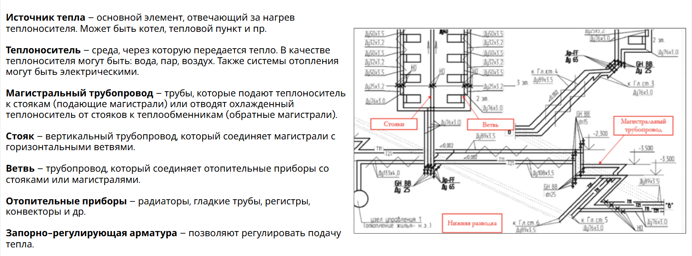
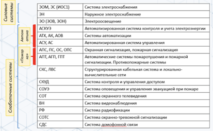
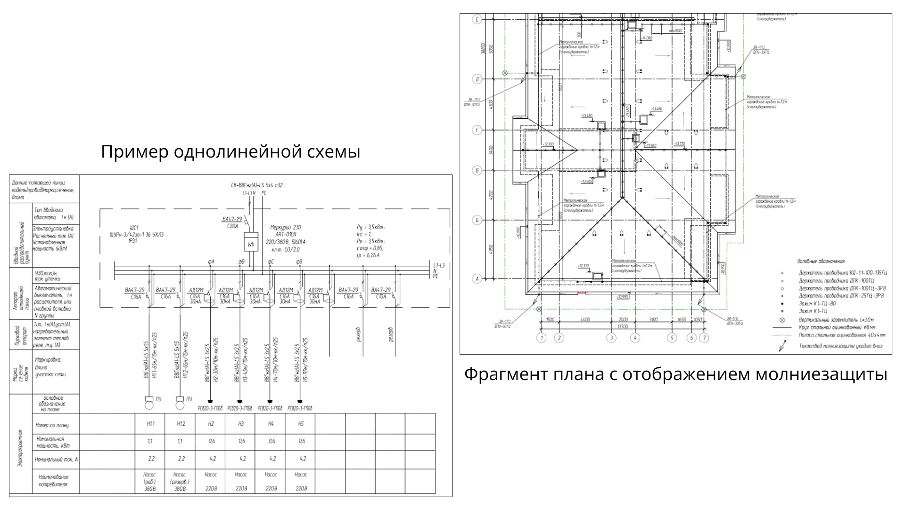

Анализируем чертежи систем отопления, вентиляции, кондиционирования и электроснабжения
На этом уроке вы разберетесь в основных аспектах систем отопления, вентиляции и кондиционирования. Я помогу вам освоить устройство инженерных сетей, разобраться в проектной документации и понять, как современные системы электроснабжения, автоматизации и связи интегрируются друг с другом для эффективной работы зданий. Вы получите четкое понимание принципов работы систем и научитесь разбираться в их классификациях. Но в этом деле никуда без определений и памяток. Пожалуйста, вникайте в их суть: это поможет вам в дальнейшем выполнении практических упражнений, которых будет много.

Начнем урок с просмотра видео, в котором я рассказала, как правильно анализировать чертежи раздела ОВ. После этого мы поэтапно рассмотрим системы отопления, вентиляции, кондиционирования и электроснабжения.
Система вентиляции
Система вентиляции – это система, которая обеспечивает воздухообмен в помещениях.
Смотрите в памятке ниже классификацию систем вентиляции.
Материал к уроку (PDF)
Классификация систем вентиляции
PDF получен с исходной страницы. Поля для названия организации и других персональных данных оставлены пустыми.
Состав систем вентиляции
Смотрите в памятке ниже, что входит в состав системы вентиляции. Для лучшего понимания элементов, я приложила к ним наглядное изображение.
Материал к уроку (PDF)
Состав системы вентиляции
PDF получен с исходной страницы. Поля для названия организации и других персональных данных оставлены пустыми.
Состав проекта систем вентиляции
Проект систем вентиляции разрабатывается в составе раздела рабочей документации ОВ и включает:
- Планы подвала и этажей. Указываются воздуховоды с обозначением размеров сечений. Отмечаются оборудование, воздухораспределительные устройства, клапаны. Поэтажные планы создаются только для этажей с разной планировкой.
- Аксонометрические схемы. Представляют условное изображение всей системы. Позволяют визуализировать взаимосвязь элементов системы.
Смотрите ниже примеры аксонометрических схем систем вентиляции.
Материал к уроку (PDF)
примерыаксонометрических схем систем вентиляции
PDF получен с исходной страницы. Поля для названия организации и других персональных данных оставлены пустыми.
Теперь попрактикуемся. Перед вами система вентиляции П2. Определите, какая из приложенных аксонометрических схем соответствует ей.
Встроенное упражнение — сохранен текст
Статическое представление
TestCards
Текстовые фрагменты упражнения извлечены с исходной встроенной страницы. Проверка ответов и анимация здесь не работают.
- Сети и системы инженерно-технического обеспечения. Отопление, вентиляция и кондиционирование
- Какая из аксонометрических схем соответствует системе вентиляции П2, указанной на данном фрагменте плана?
- Во втором варианте ответвление воздуховода 200х200 идет не в ту сторону. В третьем варианте отсутствует одна решетка, а также не соответствуют размеры сечения воздуховода.
Порядок монтажа системы вентиляции
Работы проводятся в следующем порядке (п. 7.2 ГОСТ Р 70824-2023):
- Организационно-техническая подготовка
- Монтаж вентиляционной установки
- Установка трубопроводов, воздуховодов, приточных и вытяжных решеток
- Монтаж электроснабжения и автоматизации оборудования
- Испытания на герметичность трубопроводов и воздуховодов
- Монтаж тепловой изоляции
- Пусконаладка систем вентиляции
Монтаж вентиляционной установки включает (п. 7.4 ГОСТ Р 70824-2023):
- Проверку готовности фундамента
- Доставку оборудования к месту монтажа
- Подъем, перемещение и установку в проектное положение
- Монтаж узла регулирования
- Подключение к инженерным коммуникациям: трубопроводам, воздуховодам, электроснабжению и системам автоматизации
Проверим ваше понимание этапов монтажа системы вентиляции. Расставьте правильный порядок в интерактивном тренажере ниже.
После выполнения монтажных работ необходимо провести индивидуальные испытания установки. По результатам испытаний составляется акт, форма которого указана в Приложении Д СП 73.13330.2016. Все этапы работ фиксируются в журналах.
Система кондиционирования
Система кондиционирования – это система, предназначенная для поддержания в помещении оптимальных параметров микроклимата: температуры, влажности и качества воздуха.
Смотрите в памятке ниже перечень видов систем кондиционирования.
Материал к уроку (PDF)
Виды систем кондиционирования
PDF получен с исходной страницы. Поля для названия организации и других персональных данных оставлены пустыми.
| Внутренний блок – находится внутри помещения и отвечает за обработку воздуха. Основные элементы: испаритель (охлаждает воздух), фильтры (очищают воздух), вентилятор (обеспечивает циркуляцию воздуха). |
| Наружный блок – устанавливается снаружи здания. Основные элементы: компрессор (сжимает хладагент, обеспечивая его циркуляцию), конденсатор (отводит тепло наружу), вентилятор (охлаждает конденсатор). |
| Хладагент – вещество (например, фреон), которое циркулирует в системе, обеспечивая теплообмен. |
| Система управления – включает термостаты, датчики и контроллеры для регулировки параметров. |
| Трубопроводы (как правило, медные). |
Встроенное упражнение — сохранен текст
Статическое представление
Connect-cards
Текстовые фрагменты упражнения извлечены с исходной встроенной страницы. Проверка ответов и анимация здесь не работают.
- Сети и системы инженерно-технического обеспечения
- Компрессор
- Сжимает хладагент и обеспечивает его циркуляцию
- Испаритель
- Охлаждает воздух внутри помещения
- Конденсатор
- Отводит тепло наружу
- Очищает воздух от пыли и загрязнений
- Соотнесите элемент системы с его функцией
Система отопления
Система отопления – это инженерная сеть, предназначенная для поддержания комфортной температуры в помещениях в холодное время года.
Ниже смотрите состав системы отопления и фрагмент схемы с поясняющими комментариями:

Давайте выполним упражнение на понимание системы отопления. Ваша задача внимательно посмотреть на схему и определить, из каких элементов она состоит.
Встроенное упражнение — сохранен текст
Статическое представление
TestCards
Текстовые фрагменты упражнения извлечены с исходной встроенной страницы. Проверка ответов и анимация здесь не работают.
- Какие элементы системы отопления указаны на схеме?
- магистральный трубопровод
- запорная арматура
- отопительный прибор
Схемы систем отопления
Разводка распределительных магистралей по зданию может быть горизонтальной или вертикальной.
Горизонтальная разводка магистральных трубопроводов в здании конструктивно может быть:
- Верхней, если подающая и обратная распределительные магистрали прокладываются выше отопительных приборов здания;
- Нижней, когда оба трубопровода расположены ниже отопительных приборов и прокладываются в подвале здания, а при его отсутствии — в цокольном или первом этаже;
- Смешанной, когда один из распределительных трубопроводов прокладывается по крыше здания (выше отопительных приборов), а другой — по подвалу (ниже отопительных приборов).
Система присоединения подводок к ветви системы отопления бывает:
Материал к уроку (PDF)
Система присоединения подводок к ветви системы отопления
PDF получен с исходной страницы. Поля для названия организации и других персональных данных оставлены пустыми.
Правила проведения промывки трубопроводов системы отопления
Промывка системы отопления проводится:
- после монтажа или капитального ремонта;
- при замене трубопроводов;
- перед началом отопительного сезона.
Основные правила:
- Скорость воды должна быть в 3-4 раза выше проектной.
- Гидропневматический способ. Для повышения эффективности в воду добавляют сжатый воздух. Расход воздуха должен быть не менее 50% от расхода воды, а скорость смеси — 2-3 м/с.
- Перед промывкой нужно открыть всю запорно-регулирующую арматуру на трубопроводах и отопительных приборах.
- Промывка продолжается до полного удаления грязи и окалины. В открытых системах также требуется анализ воды по нормам действующих СанПиН 1.2.3685-21 и 2.1.3684-21. По результатам проведения промывки необходимо составить и подписать акт по форме СП 347.1325800.2017, приложение Г).
Испытания систем отопления
Испытание водяных систем отопления, теплоснабжения и холодоснабжения следует выполнять при отключенных теплогенераторах и расширительных сосудах, при закрытых задвижках, расположенных у насосов, гидростатическим методом под давлением, равным 1,5 рабочего давления, но не менее 0,2 МПа (2 кгс/см2) в самой нижней точке системы.
Система признается выдержавшей испытание, если в течение пяти минут нахождения ее под пробным давлением:
- падение давления не превысит 0,02 МПа (0,2 кгс/см2);
- отсутствуют течи тепло- или холодоносителя в сварных швах, трубах, резьбовых соединениях, арматуре, отопительных приборах и оборудовании.
Встроенное упражнение — сохранен текст
Статическое представление
TestCards
Текстовые фрагменты упражнения извлечены с исходной встроенной страницы. Проверка ответов и анимация здесь не работают.
- Какой параметр указывает, что система отопления прошла испытание?
- Давление превышает 1,5 МПа
- Падение давления не более 0,02 МПа
- Температура ниже 10°C
- Протечки в соединениях
Пробное давление при гидростатическом методе испытания систем отопления и теплоснабжения, присоединенных к тепловым сетям централизованного теплоснабжения, не должно превышать предельного пробного давления для установленных в системе отопительных приборов и отопительно-вентиляционного оборудования.
Вы уже разобрались в системах отопления, кондиционирования и вентиляции, а также применили знани в практических тренажерах. Теперь предлагаю вам посмотреть видео, в котором я рассказала и наглядно соотнесла проект с реальным объектом. Обязательно посмотрите видео, чтобы успешно выполнить задание.
Давайте проверим, как вы умеете соотносить чертежи с изображением реальных объектов.
Встроенное упражнение — сохранен текст
Статическое представление
Connect-cards
Текстовые фрагменты упражнения извлечены с исходной встроенной страницы. Проверка ответов и анимация здесь не работают.
- Сети и системы инженерно-технического обеспечения. Отопление, вентиляция и кондиционирование
- Сети и системы инженерно-технического обеспечения
- Сопоставьте чертежи рабочей документации и фактические фотографии с объекта
Электроснабжение, автоматизация, связь
Электроснабжение – это система обеспечения электроэнергией зданий, сооружений и оборудования, включающая источники питания, сети передачи и распределения электричества.
Автоматизация – это система, позволяющая управлять инженерными процессами без участия человека или с минимальным вмешательством.
Связь – это комплекс технических решений для передачи информации (телефония, интернет, сигнализация, телевидение и пр.).
Классификация систем
Системы энергоснабжения делятся на силовые и слаботочные: силовые рассчитаны на большие нагрузки – 220 вольт и более; слаботочные рассчитаны до 60 вольт (относятся акустические и сигнальные провода, витые пары, включая шнур для интернета, провода, передающие аналоговые сигналы и пр).

Состав проекта
В состав рабочих чертежей включают:
- Планы этажей с обозначением основных элементов систем (кабели, лотки, подъемы, опуски, оборудование, лотки);
- Однолинейные схемы, структурные схемы;
- Схемы щитов, шкафов;
- Схемы заземления, молниезащиты;
- Чертежи конструкций и деталей, предназначенных для установки электрического оборудования (при отсутствии типовых);
- Спецификации.
На изображении ниже я привела наглядные примеры схем.

Условные графические изображения электропроводок, прокладок шин, кабельных линий и электрического оборудования на планах прокладки электрических сетей и (или) расположения электрооборудования зданий и сооружений устанавливает ГОСТ 21.210-2014.
Материал к уроку (PDF)
Системы
PDF получен с исходной страницы. Поля для названия организации и других персональных данных оставлены пустыми.
Это был непростой урок, но вы справились! Осталось выполнить еще одно упражнение на закрепление темы электроснабжения, а после переходите в следующий урок.
Встроенное упражнение — сохранен текст
Статическое представление
Flipcard
Текстовые фрагменты упражнения извлечены с исходной встроенной страницы. Проверка ответов и анимация здесь не работают.
- Электроосвещение относится к слаботочным системам
- Нет, электроосвещение относится к слаботочным системам
- Следующий вопрос
- Подстанции и генераторы относятся к источникам питания
- Силовые сети относятся к классу напряжения от 220 В и выше